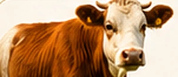
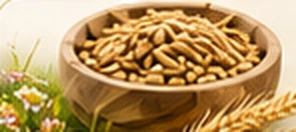
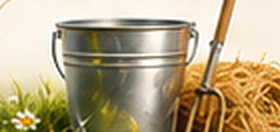
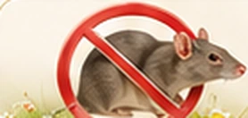

На нашем сайте
Добавляйте товары в корзину и проверьте оформление заказа. Перед запуском подключим оплату, доставку и обработку заявок.
Перейти в каталог → Золотой теленокАлтая
Золотой теленокАлтая

Средства по уходу
Кормовые
Товары для фермы
Средства от грызуновПопробуйте другое слово или выберите все категории.
* На этой версии сайта все цены указаны для примера. Наличие, реальные цены и доставка ещё не настроены. Кнопки Ozon работают у товаров, для которых добавлены точные ссылки. Для остальных ссылки появятся позже.
Оценка и число отзывов — по данным магазина на Ozon на .
«Золотой теленок Алтая» — магазин товаров для ухода за животными, кормовых добавок и фермерского хозяйства. Мы создаём понятный каталог, в котором каждый товар удобно рассмотреть и выбрать.